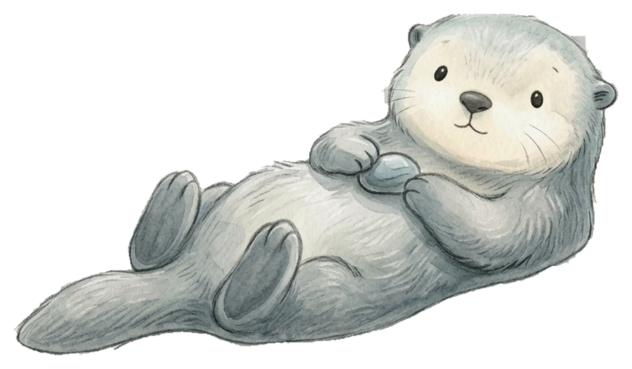

Three complete user flow directions for the otter-first app
Assumption used here: QRC = Review / gentle insights / weekly reflection.
We can rename it later without changing the structure.
Sea otter = self-externalizationAI log = main record entryIslands stay visible in product worldSelf-compassion remains distinct
Option A
Home = Otter Home
The clearest and most familiar structure. Users land on a dedicated home screen
with the otter, then branch to islands, to-do, and profile from the bottom nav.
Best for: easy onboarding and first-time clarity
Main CTA: tap otter to talk
Self-Compassion: secondary button on home
QRC / Review: inside Me
Tuesday · gentle restart
Welcome back
5:42 pm

I can listen first. We don’t need to organize everything before we begin.
Today’s latest shell
“I finally finished the draft I kept avoiding.”
To-Do nudge
One task still open: send the advisor email before 7 pm.
Open appTap otterLog or reflectAI stores to island
Option B · Recommended
Otter as Floating Global Entry
The otter is not one tab among others. It floats above the app and acts as the
universal emotional entry point. Bottom nav handles the stable destinations.
Best for: strongest product identity
Main CTA: floating otter button from any page
Self-Compassion: mode switch inside chat
QRC / Review: dedicated bottom tab
This week’s tide
Your islands
3 new shells
Body
Work
Learning
Relations
Curiosity
Self-Comp
Recent gentle review
You’ve been returning to Learning and Work. Energy dips happened after 9 pm.
Tap the otter anytime
Chat sheet opens with two modes: Log with me and
Sit with me.
Any pageTap otterChoose Log / SitReturn to island or task
Option C
Talk-First
The app opens directly into conversation. This is the strongest version of “AI log
assistant as default,” with islands becoming the world view users open after talking.
Best for: fastest capture and strongest chat habit
Main CTA: input is already open
Self-Compassion: top segmented control
QRC / Review: inside World or Me
Talk first
What happened today?
Draft
I can hold the details with you first, and sort them after.
I finished class, skipped lunch, then felt weirdly proud after sending my notes.
schoolbodysmall win
After send
AI sorts this into Learning + Body, then offers “open those islands”.
Open appSpeak immediatelyAI sorts memoryOpen world if needed